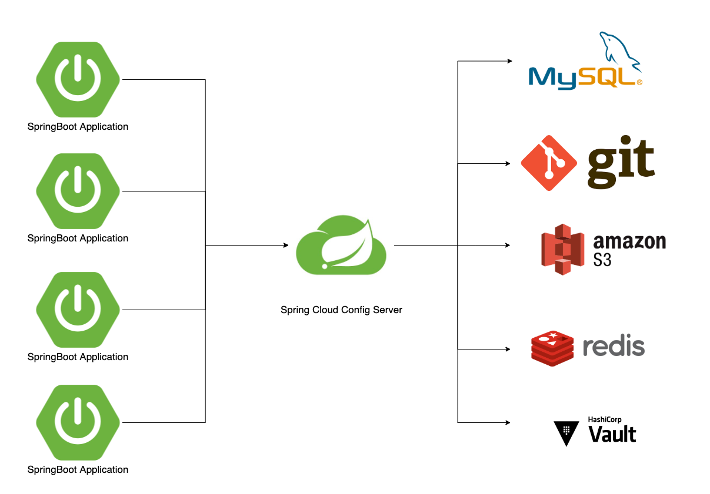
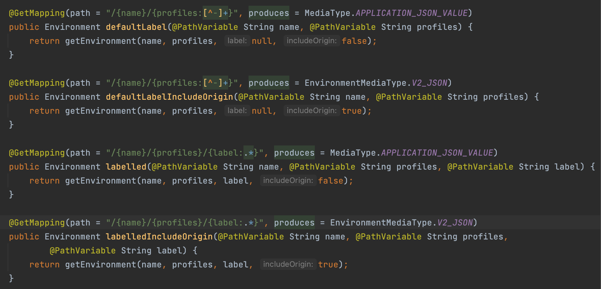

들어가며
해당 글에서 사용한 예제의 버전 정보는 아래와 같습니다
- kotlin 1.6.0
- Spring Boot 2.6.3
- Spring Cloud Dependencies 2021.0.1
Spring Cloud Config 관련 글은 총 4개의 글로 작성되었습니다.
- Spring Cloud Config 시작하기
- Spring Cloud Bus 시작하기
- Spring Cloud Config Monitor 시작하기
- Spring Cloud Config 주기적으로 Polling 하기
Spring Cloud Config란
Spring Cloud Config는 분산 시스템에서 remote configuration을 제공합니다.
Config Server-Client의 구조로 이루어져 있습니다.

Spring Cloud Config Server
Config Server는 remote configuration을 HTTP API로 제공합니다.
Spring Cloud Config에서 지원하는 Backend 저장소
spring cloud config에서는 Backend 저장소로 다양한 시스템을 지원합니다.
- git (가장 많이 사용되는 repository 입니다.)
- File System
- Vault
- JDBC (이번 프로젝트에서는 시스템에서 설정을 용이하게 변경하기 위해 JDBC를 사용했습니다)
- Redis
- AWS S3
- CrudHub
설정 방법
1. build.gradle 의존성 추가
1 | dependencies { |
- spring-cloud-starter-config, spring-cloud-config-server
- spring cloud config server 구현을 위해 의존성을 추가합니다.
- spring-boot-starter-jdbc
- JDBC Backend 사용을 위해 의존성을 추가합니다.
2. 코드 구성
1 |
|
@EnableConfigServer어노테이션을 선언하여 Config Server 기능이 동작하도록 합니다.
3. Properties Table 추가
1 | create table remote_configurations |
- application: 프로퍼티가 적용될 application의 이름입니다. (ex. jaehun-config-admin)
- profile: 프로퍼티가 적용될 profile 입니다 (ex. dev, beta, prod)
- label: 프로퍼티를 적용한 label 입니다. 기본값은 master입니다.
- prop_key: 프로퍼티 key 입니다.
- prop_value: 프로퍼티 value 입니다.
- created_at: 프로퍼티의 생성 시각입니다.
- modified_at: 프로퍼티의 수정 시각입니다.
4. application.yml 설정
1 | spring: |
spring.cloud.config.enabled=true: remote configuration을 사용합니다.spring.cloud.config.server.jdbc.enabled=true: spring cloud config server에서 jdbc backend를 사용합니다.spring.cloud.config.server.jdbc.sql: config 조회 요청 시, application, profile, label을 파라미터로 수행하는 쿼리입니다.- 이 쿼리의 실행 결과로 나온 프로퍼티가 client에 전달됩니다.
spring.datasource.*: remote configuration에 대한 Datasource를 정의합니다.spring.profiles.active=jdbcJDBC Backend를 사용하기 위해 active profiles에 추가합니다.
Config Server에서 어떤 API로 configuration properties를 조회하나요?
spring-cloud-config-server 의존성을 추가하게 되면 EnvironmentController 가 생성되어 properties 조회를 위한 API를 제공합니다. (이외에도 더 많습니다)

- 대표적으로 사용하는 API는
/{application-name}/{profile}/{label}로 이루어진 API를 사용합니다. (ex. GET http:///jaehun-microservice-router/prod/master) - 위의 endpoint로 요청하게 되면 내부적으로 backend 저장소에 저장된 application, profile, label에 부합하는 설정 값을 리턴하게 됩니다.
리턴되는 정보 예시
1 | curl --location --request GET 'http://config-server/jaehun-microservice-router/prod/master' |
- 클라이언트에서는 리턴되는 프로퍼티 정보를 기반으로 context를 refresh 합니다.
- 이때
@RefreshScope로 빈 스코프가 정의된 bean에 대해 조회한 프로퍼티로 바인딩 합니다.
Spring Cloud Config Client
클라이언트가 되는 Spring Boot 애플리케이션은 Spring Cloud Config Server에서 제공하는 properties를 즉시 사용할 수 있습니다.
설정 방법
1. build.gradle 의존성 추가
1 | dependencies { |
- spring-cloud-starter-config, spring-cloud-config-client
- spring cloud config client 구성을 위해 의존성을 추가 합니다.
- spring-boot-starter-actuator
/actuator/refresh를 호출 하여 context refresh를 하기 위해 추가합니다.
- spring-boot-starter-aop
- client 설정 중 retry 옵션을 사용하기 위해 추가합니다.
2. application.yml 설정 (spring boot 2.4 이상 버전)
1 | management: |
management.endpoints.web.exposure.include=refresh- /actuator/refresh endpoint를 노출 시켜, 클라이언트의 context refresh를 실행시키도록 합니다.
- context refresh가 실행되면 config server로 부터 현재 프로퍼티 정보를 받아옵니다.
spring.config.import=optional:configserver:http://localhost:8080- spring boot 2.4 이상 버전부터 지원하는 설정입니다.
- 2.3 이하 버전에서는 bootstrap.yml 파일에 spring.cloud.config 설정을 작성해야 합니다.
- configserver에 대한 host 정보를 설정합니다.
- default는 http://localhost:8888입니다.
- optional을 제거하고
configserver:http://localhost:8080으로 설정 시, config server에 연결할 수 없는 경우 애플리케이션 구동에 실패합니다.
spring.cloud.config.name=jaehun-microservice-router- 현재 애플리케이션의 application-name을 지정합니다.
- 이 값은 기본으로 spring.application.name 프로퍼티 값을 사용합니다.
- 이 값으로 config server에 조회할 application-name으로 사용합니다.
spring.cloud.config.fail-fase=true- config-server에 연결할 수 없는 경우 애플리케이션 구동에 실패합니다.
configserver:http://localhost:8080와 비슷한 설정입니다.- retry 옵션을 사용하고자 하는 경우에 반드시 선언되어야 합니다.
spring.cloud.config.retry.*- config server에 연결 실패하거나 응답 에러가 발생하는 경우 재시도하는 정책입니다.
initial-interval: config server api 요청 실패 후 다음 retry 요청을 위한 internal 입니다. 단위는 ms(밀리세컨드)입니다.max-attempts: 최대로 retry하는 횟수 입니다.multiplier: 한번 retry 할 때마다 interval 시간의 지연율을 곱합니다- initial-interval: 1000 경우 2번째 retry는 1100ms 이후 실행합니다.
spring.cloud.config.request-connect-timeout- config server 요청 시 사용하는 connection timeout 값입니다.
- 단위는 ms(밀리세컨드)
- 기본값은 10초 입니다.
spring.cloud.config.request-read-timeout- config server 요청 시 사용하는 read timeout 값입니다.
- 단위는 ms(밀리세컨드)
- 기본값은 185초 입니다.
어떻게 런타임에 프로퍼티를 갱신하나요?
클라이언트에 POST /actuator/refresh API를 요청해 프로퍼티를 config server에서 불러와 갱신합니다.
모든 Bean을 다시 만드나요?
Bean Scope가 @RefreshScope 로 선언된 Bean에 대해서만 다시 생성합니다.
- Bean 내에 선언된
@Value어노테이션을 사용한 프로퍼티의 값을 갱신 합니다. @ConfigurationPropertiesbean을 갱신합니다.- 단! remote property를 기반으로
@ConditionalOnProperty는 사용할 수 없습니다.- 라이프사이클이 달라 적용되지 않습니다.
사용 예제
1 |
|
질문 있어요~!
@RefreshScope가 선언된 bean을 사용하는 bean도 재생성 되나요?
1 | // BeanA도 재생성될까? => No!! |
아닙니다~! @RefreshScope가 선언된 bean은 기본 생성 전략이 lazy-loading입니다.
따라서 최초 사용하는 시점에 initializing이 이루어집니다.
그렇기 때문에 @RefreshScope가 선언된 bean을 사용하는 bean은 재생성 되지 않습니다!
@RefreshScope가 선언된 bean이 재생성되고 최초로 사용할 때 initializing 되게 됩니다
Spring Cloud Config의 기본적인 기능을 살펴보았습니다

근데말이죠…
클라이언트 모듈을 여러 대 운영하면 일일이 /actuator/refresh를 호출해야 할까요?
이런 고통과 고민을 덜어주기 위해 다음 글에서는 Spring Cloud Bus라는 기능을 소개합니다.